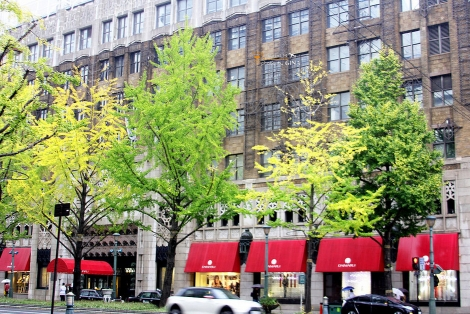
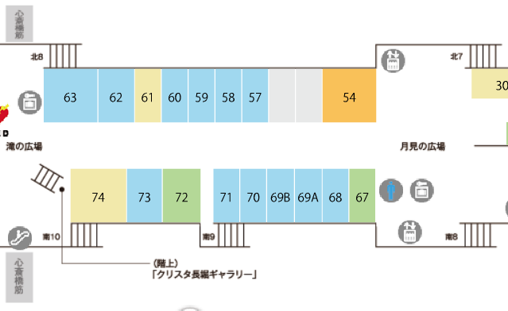
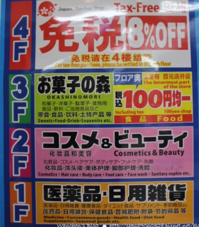

(龍蝦三明治→星巴客→[手創館, GAP, UNIQLO]→藥妝店→HARBS)
示意圖
HARBS 大丸心齋橋店 [官網] 在北館3F
營業時間：10:00~20:30(最後點餐20:00)
在3F

水果千層派 780

大丸B2F 有YOKU MOKU
牛油餅乾

星巴克 クリスタ長堀店 [官網]
營業時間：7:00~22:00
位於54號處, 北7出口附近

東急手創館 心齋橋店 [官網]
營業時間：10:00~21:00
UNIQLO 心齋橋店 [官網]
營業時間：11:00~21:00
GAP專賣店 心齋橋店 [官網]
營業時間：10:00~22:00

大國藥妝店 [官網]
營業時間：8:00~22:30

補充-美妝店
パワードラッグワンズ心斎橋本店
營業時間：8:00~22:00